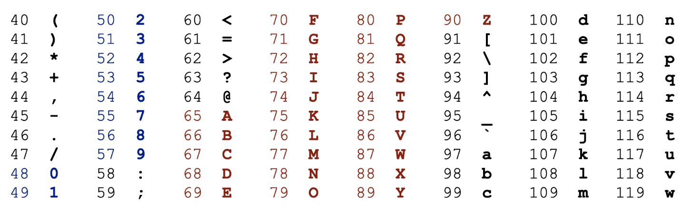
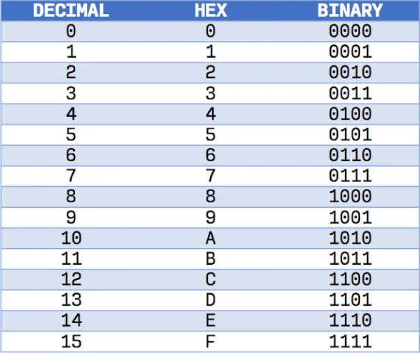
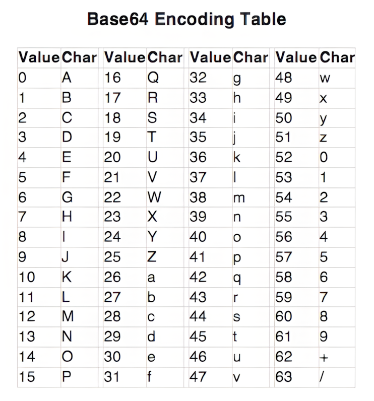
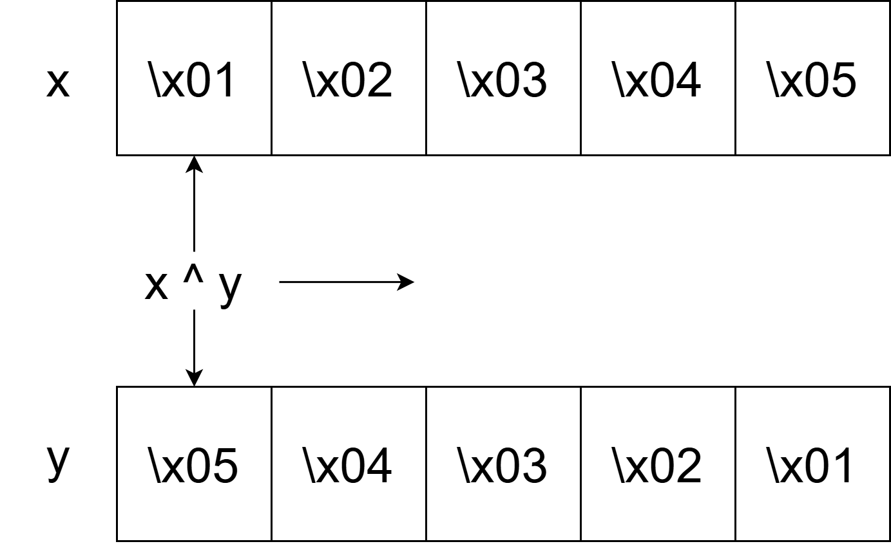

<!-- .slide: data-state="front hide-controls" --> <div id="title">Lab Cryptography Toolkit</div> <div id="subtitle">Data Privacy and Security</div> <div id="date">Data Science and Management (DASMA)</div> --- ## Crypto CTF Toolkit - Encoding <div class="content-center"> <br/> | Operation | Arguments | What it does | Library | | :--------------------: | :--------------------------------------------------- | :------------------------------------- | :----------- | | `.encode()` | none (called on string) | Converts a string into bytes | Built-in | | `.decode()` | none (called on bytes) | Converts bytes into a string | Built-in | | `bytes(...)` | arg1: int/string, arg2: encoding (optional) | Creates an immutable bytes object | Built-in | | `bytearray(...)` | arg1: int/string, arg2: encoding (optional) | Creates a mutable byte sequence | Built-in | | `int.from_bytes()` | arg1: bytes, arg2: byteorder | Converts bytes to an integer | Built-in | | `int.to_bytes()` | arg1: length, arg2: byteorder | Converts an integer to bytes | Built-in | | `bytes_to_long()` | arg1: bytes | Converts bytes to a large integer | PyCryptodome | | `long_to_bytes()` | arg1: integer | Converts a large integer to bytes | PyCryptodome | | `bytes.fromhex()` | arg1: hex string | Converts hex strings into bytes | Built-in | | `binascii.unhexlify()` | arg1: hex string | Converts hex strings into bytes | binascii | | `binascii.hexlify()` | arg1: bytes | Converts bytes into hex | binascii | | `hex()` | none (called on int/bytes) | Converts bytes/int to a hex string | Built-in | | `base64.b64decode()` | arg1: bytes/str | Converts Base64 to data | base64 | | `base64.b64encode()` | arg1: bytes | Encodes data in Base64 | base64 | </div> --- ## Crypto CTF Toolkit - Operations <div class="content-center"> | Operation | Arguments | What it does | Library | | :---------------: | :---------------------------------- | :---------------------------------------------- | :------- | | `zip()` | arg1: iterable1, arg2: iterable2, … | Iterates over byte sequences in parallel | Built-in | | `^` | arg1: int, arg2: int | XOR operator – performs bitwise XOR on integers | Built-in | | `ord()` | arg1: character | Converts a character to an integer | Built-in | | `chr()` | arg1: integer | Converts an integer to a character | Built-in | | `strxor()` | arg1: bytes, arg2: bytes | XORs two byte sequences (same len) | PyCryptodome | | `xor()` | arg1: bytes, arg2: bytes | XORs two byte sequences (any len) | Pwntools | </div> --- ## Crypto CTF Toolkit - Math Helpers <div class="content-center"> | Operation | Arguments | What it does | Library | | :---------------: | :--------------------------------------------------- | :------------------------------------------ | :----------- | | `%` | arg1: int, arg2: int | Computes the remainder modulo n | Built-in | | `//` | arg1: int, arg2: int | Integer division (discard remainder) | Built-in | | `**` | arg1: int, arg2: int | Exponentiation | Built-in | | `pow()` | arg1: base, arg2: exponent, arg3: modulus (optional) | Modular exponentiation | Built-in | | `math.gcd()` | arg1: int, arg2: int | Computes greatest common divisor | math | | `inverse()` | arg1: int, arg2: modulus | Computes modular inverse | PyCryptodome | | `getPrime()` | arg1: bit length | Generates prime of specified bit len | PyCryptodome | | `isPrime()` | arg1: int | Checks whether a number is prime | PyCryptodome | </div> --- ## Crypto Challenges: Rule of Thumb <div class="content-center"> <div class="alert alert-recall">Crypto operates on bytes. Humans read strings. Math prefers integers.</div> <br/> **Strings (Human-readable)** Examples: - **ASCII** strings - "FLAG{CRYPT0_1S_FUN}" - **hex** strings - 4d79537472696e67 - **base64** strings - U0VMRUNUIFBBQ0s= <br/> <div class="alert alert-warning"><b>NOTE</b>: Must be <b>converted to bytes</b> before crypto operations!</div> </div> --- ## Crypto Challenges: Rule of Thumb <div class="content-center"> <div class="alert alert-recall">Crypto operates on bytes. Humans read strings. Math prefers integers.</div> <br/> **Bytes (Crypto-native)** Examples: b'\x46\x4c\x41\x47', b'Hello World' Used for: - Bitwise operations e.g. XOR, AND, NOT, ... - Encryption / decryption. - Hashing. </div> --- ## Bytes <div class="content-center"> <div class="alert alert-recall">At the lowest level, all digital data is stored as bytes, where each byte is a group of 8 bits (0s and 1s).</div> <br/> <div class="cell-center"> Bits (0, 1) ↓ Bytes (8 bits = 256 possible values) ↓ Data types (integers, floats, characters, booleans) ↓ ... </div> Bytes can be **encoded** to be represented in different formats (e.g. ASCII, base64, hex, ...) - Encoding ≠ Encryption. - Encoding simply means you are changing how the same data is represented, **not hiding it**. </div> --- ## Bytes ↔ Strings <div class="content-center"> <div class="alert alert-recall">Python provides a dedicated <code>bytes</code> type to work with raw binary data.</div> <br/> You can move between strings and bytes using `encode()` and `decode()`: <br/> String → Bytes (**encode**) ```python s = "Hello World" b = s.encode() # returns byte object b'Hello World' ``` <br/> Bytes → String (**decode**) ```python s2 = b.decode() # returns "Hello World" ``` <br/> </div> --- ## Bytes Literal <div class="content-center"> Alteratively, you can create a `bytes` object directly using a **bytes literal**: ```python b = b'Hello World' ``` <br/> - The **b prefix** tells Python this is a bytes object, not a string. - Each character in the literal corresponds to a byte value. - The produced byte object is **immutable**. <br/> <div class="alert alert-warning"><b>NOTE</b>: byte literals only support ASCII characters:</div> <br/> <div class="columns-container columns-top"> <div class="col"> This works: ```python b'Hello' ``` </div> <div class="col"> These DON'T: ```python b'03f4' # hex-encoded string b'SGVsbG8=' # base64-encoded string b'Café' # Contains NON-ASCII char ``` </div> </div> </div> --- ## Bytes ↔ Encoded Strings <div class="content-center"> To convert encoded strings into bytes, you must decode them using the appropriate method: <br/> Hex → Bytes (equivalent alternatives): <div class="columns-container columns-top"> <div class="col"> ```python bytes.fromhex('03f4') ``` <br/> </div> <div class="col"> ```python from binascii import unhexlify unhexlify('03f4') ``` <br/> </div> </div> Base64 → Bytes ```python import base64 base64.b64decode('SGVsbG8=') ``` <br/> <div class="alert alert-warning"><b>NOTE</b>: The decoding method must match the encoding used.</div> </div> --- ## Bytes Sequences <div class="content-center"> <div class="alert alert-hint">What if you need to modify individual bytes in Python?</div> <br/> `bytes([...])` -> produces an **immutable** byte object. ```python bytes("Hello", "ascii") #string + encoding bytes([65, 66, 67]) #array of integers in the range 0-255 ``` <br/> `bytearray(...)` -> produce a **mutable** byte object. ```python b = bytearray(b'ABC') b[0] = 97 ``` - Similar to bytes, but **modifiable**. - Useful when you need to change individual byte values. </div> --- ## Bytes Order (Endianess) <div class="content-center"> <div class="alert alert-recall">Endianness defines how bytes are stored in memory.</div> - **Big-endian**: most significant byte first ≈ "human reading order". - **Little-endian**: least significant byte first ≈ "inverse order". <br/> Example: consider the word ```python b'HELLO' # [72, 69, 76, 76, 79] = ASCII integers for each letter ``` <br/> <div class="columns-container columns-center"> <div class="col"> Big-endian -> bytes stored in text order ```python H E L L O 72 69 76 76 79 ``` </div> <div class="col"> Little-endian -> bytes stored in reverse order ```python O L L E H 79 76 76 69 72 ``` </div> </div> </div> --- ## Bytes ↔ Integers <div class="content-center"> Python lets you convert between integers and bytes easily: <br/> Bytes → Integer ```python b = b'HELLO' # [72, 69, 76, 76, 79] n = int.from_bytes(b, byteorder='big') #or byteorder='little' for litte-endian ``` <br/> - Interprets the bytes as one single number - **Must specify byteorder**: big-endian and little-endian produce different integers. <br/> Integer → Bytes ```python n = 310400273487 b = n.to_bytes(5, byteorder='big') #5 = n. of bytes to use to represent the integer ``` </div> --- ## Working with Encodings - ASCII <div class="content-center"> <div class="alert alert-recall">Standard encoding that maps each character to a unique number between 0 and 127.</div> <p></p> <div class="alert alert-warning">Uppercase and lowercase letters have different ASCII values.</div> - Example: 'A' → 65, 'a' → 97. </div> --- ## Working with Encodings - ASCII <div class="content-center"> <div class="alert alert-hint">You can move between characters and their ASCII values using these functions:</div> <br/> - `ord(character)` - returns the number (ASCII value) of a character: ```python ord('A') # returns 65 ``` <br/> - `chr(number)` - returns the character corresponding to the passed number (ASCII value): ```python chr(65) # returns 'A' ``` </div> --- ## Working with Encodings – Hex <div class="content-center"> <div class="alert alert-recall">Hexadecimal (hex) is a way to represent bytes using <b>base-16 digits</b> (0–9, a–f).</div> <br/> <div class="columns-container columns-center"> <div class="col"> - Used to display binary data (bytes) in a readable form. - Each byte is represented by **two hex characters**. <br/> Example: ```python b = b'Hi' #ASCII values: # H -> 72 # i -> 105 b.hex() = 48 69 #48 = 2 hex characters = the single H byte. #69 = 2 hex characters = the single i byte. ``` <br/> <div class="alert alert-hint"><b>INTUITION</b>: strings containing only the characters (0-9, a-f) are likely hex-encoded.</div> </div> <div class="col"> <p></p> </div> </div> </div> --- ## Working with Encodings – Hex <div class="content-center"> <div class="alert alert-hint">You can move between bytes and hex strings using these functions:</div> <br/> <div class="columns-container columns-center"> <div class="col"> Bytes → Hex ```python b = b'Hi' b.hex() # returns '4869' ``` ```python import binascii binascii.hexlify(b'Hi') # returns b'4869' ``` </div> <div class="col"> Hex → Bytes ```python bytes.fromhex('4869') # returns b'Hi' ``` ```python import binascii binascii.unhexlify(b'4869') # returns b'Hi' ``` </div> </div> </div> --- ## Working with Encodings – Base64 <div class="content-center"> <div class="alert alert-recall">Base64 is a way to represent bytes using <b>64 ASCII characters</b> (A–Z, a–z, 0–9, +, /) plus = for padding.</div> <br/> <div class="columns-container columns-top"> <div class="col"> - Used to encode binary data (bytes) in a form that can be safely transmitted. - Each 3 bytes of data become **4 Base64 characters**. - Padding (=) is added when the number of bytes isn’t a multiple of 3. Example: ```python b = b'Hi' import base64 base64.b64encode(b) # b'SGk=' ``` <br/> <div class="alert alert-hint"><b>INTUITION:</b> strings containing only letters, digits, +, / (and possibly = at the end) are likely base64-encoded.</div> </div> <div class="col"> <p></p> </div> </div> </div> --- ## Working with Encodings – Base64 <div class="content-center"> <div class="alert alert-hint">You can move between bytes and base64 strings using these functions:</div> <br/> Bytes → Base64 ```python import base64 base64.b64encode(b'Hello World') # b'SGVsbG8gV29ybGQ=' ``` <br/> Base64 → Bytes ```python import base64 base64.b64decode(b'SGVsbG8gV29ybGQ=') # b'Hello World' ``` </div> --- ## XOR Operator <div class="content-center"> <div class="alert alert-recall">The <code>^</code> operator in Python performs a bitwise XOR <b>between two integers</b>.</div> <br/> - Works one byte at a time when applied to byte objects. - **Cannot be applied directly to byte sequences**: <br/> <div class="columns-container columns-top"> <div class="col"> This does NOT work: ```python b1 = b'AB' # bytes object: [65, 66] b2 = b'cd' # bytes object: [99, 100] b1 ^ b2 #TypeError ``` <br/> </div> <div class="col"> This works: ```python b1 = b'B' # 66 b2 = b'c' # 99 result = b1[0] ^ b2[0] ``` </div> </div> <div class="alert alert-warning"><b>NOTE</b>: b[0] extracts the byte as an integer.</div> </div> --- ## XOR-ing Bytes Sequences <div class="content-center"> <div class="alert alert-note"><b>1: Using Python built-in methods</b></div> <br/> ```python z = bytes([x ^ y for x, y in zip(x, y)]) ``` <br/> <div class="columns-container columns-center"> <div class="col"> - x and y are **byte objects**. - Think of them as rows of little boxes, each holding a byte. - `zip(x,y)` goes through both "rows" together... - It takes the first box from x and from y, then the second, and so on. </div> <div class="col"> </div> </div> </div> --- ## XOR-ing Bytes Sequences <div class="content-center"> <div class="alert alert-note"><b>1: Using Python built-in methods</b></div> <br/> ```python z = bytes([x ^ y for x, y in zip(x, y)]) ``` <br/> <div class="columns-container columns-center"> <div class="col"> - `for x,y in zip(x,y)` -> for each pair of "boxes" in the same position... - `x ^ y` performs the bitwise XOR. - `[...]` collects all results into a list. - `bytes([...])` turns the list into a byte object. </div> <div class="col"> <p></p> </div> </div> </div> --- ## XOR-ing Bytes Sequences <div class="content-center"> <div class="alert alert-note"><b>2: Using PyCryptodome's strxor() function</b></div> <br/> 1. Install the library: `pip install pycryptodome` 2. Import the function: `from Crypto.Util.strxor import strxor` 3. Use it to XOR together 2 bytes object **of the same length** <br/> ```python flag = strxor(key, encrypted_flag) ``` </div> --- ## XOR-ing Bytes Sequences <div class="content-center"> <div class="alert alert-note"><b>3: Using pwntools' xor() function</b></div> <br/> 1. Install the library: `pip install pwntools` 2. Import the function: `from pwn import xor` 3. Use it to XOR together 2 bytes object **of any length** - Byte objects of different lengths will produce results that contain garbage bytes (that you can ignore)! <br/> ```python flag = xor(key, encrypted_flag) #where len(key) > len(encrypted_flag) ``` <br/> Possible output: ``` WIT{th1s_is_th3_fl4g?!?}\x03\x10\xff ``` <br/> <div class="alert alert-warning"><b>NOTE</b>: garbage bytes at the end can be ignored.</div> </div> --- ## RSA Essentials - Operators <div class="content-center"> <div class="alert alert-recall">Below are the main arithmetic operators used in RSA computations.</div> <br/> **Modulo (%)** ```python a % n # Example: 17 % 5 = 2 ``` - Computes the **remainder** after dividing a by n. - RSA encryption and decryption are **always done modulo n**. <br/> **Integer Division (//)** ```python a // b # Example: 17 // 5 = 3 ``` - Division with the **remainder discarded**. - Useful when working with prime factors and RSA key formulas. </div> --- ## RSA Essentials - Functions <div class="content-center"> <div class="alert alert-recall">The following methods are useful when solving RSA challenges.</div> <br/> `pow` - **modular exponentiation** <div class="columns-container columns-center"> <div class="col"> ```python pow(base, exponent, modulus) ``` <br/> </div> <div class="col"> Computes $(\\text{base}^{\\text{exponent}}) \\bmod \\text{modulus}$ <br/> </div> </div> Why it matters for RSA: - Core operation in encryption ($c = m^e \\bmod n$) - Core operation in decryption ($m = c^d \\bmod n$) - **Handles very large integers efficiently**, which is essential for RSA <br/> <div class="alert alert-warning">NOTE: Do not use ** (Python's exponentiation operator) for large RSA numbers</div> ```python m ** e % n #Slow / not recommended ``` </div> --- ## RSA Essentials - Functions <div class="content-center"> <div class="alert alert-recall">The following methods are useful when solving RSA challenges.</div> <br/> `math.gcd` - **greatest common divisor** ```python import math a = 12 b = 18 math.gcd(a, b) #returns 6 ``` <br/> - Computes the **largest integer that divides both a and b**. - Used to check if e and φ(n) are coprime. ```python math.gcd(e, phi_n) # should be 1 for RSA ``` </div> --- ## PyCryptodome's helpers <div class="content-center"> <div class="alert alert-recall">Installation: <code>pip install pycryptodome</code></div> <br/> <div class="alert alert-note"><b>Large Integers helpers</b></div> Allows easy **conversion between bytes and very large integers** used in crypto (RSA). <div class="columns-container columns-center"> <div class="col"> Bytes → Integer ```python from Crypto.Util.number import bytes_to_long b = b'Hello' n = bytes_to_long(b) ``` - Treats the bytes as one big integer. - Preserves byte order (big-endian by default). </div> <div class="col"> Integer → Bytes ```python from Crypto.Util.number import long_to_bytes n = 310939249775 b = long_to_bytes(n) ``` - Converts a large integer back into bytes. - Works for integers of any size. <br/> </div> </div> <div class="alert alert-warning"><b>NOTE</b>: the above operations can also be performed using Python’s built-in methods:</div> ```python m_bytes = n.to_bytes((n.bit_length() + 7) // 8, byteorder='big') #equivalent to long_to_bytes(n) n = int.from_bytes(b, byteorder='big') #equivalent to bytest_to_long(b) ``` </div> --- ## PyCryptodome's helpers <div class="content-center"> <div class="alert alert-note"><b>Modular Inverse helper</b></div> Computes the **modular inverse** of $a \\bmod n$ ```python from Crypto.Util.number import inverse d = inverse(e, phi_n) #same as pow(e, -1, phi_n) ``` - Essential for RSA private key computation ($d = e^-1 \\bmod φ(n)$) <br/> <div class="alert alert-note"><b>Prime Numbers helpers</b></div> ```python from Crypto.Util.number import getPrime, isPrime p = getPrime(512) isPrime(p) # True ``` - `Crypto.Util.number.getPrime(bits)` generates a prime of bits length. - `Crypto.Util.number.isPrime(n)` checks if a number is prime. - Useful for RSA key generation or attacks on small primes. </div>